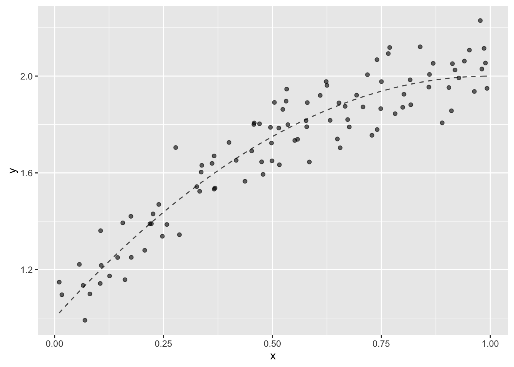
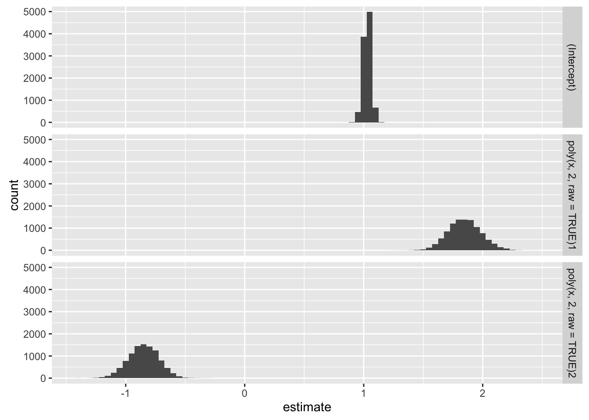
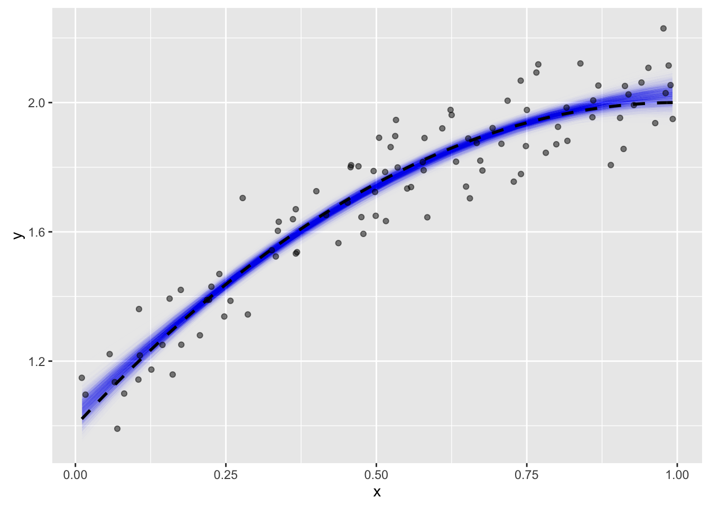

Parameter-assessment using bootstrapping
library("devtools")
library("tibble")
library("ggplot2")
library("modelr")
library("dplyr")
Attaching package: 'dplyr'The following objects are masked from 'package:stats':
filter, lagThe following objects are masked from 'package:base':
intersect, setdiff, setequal, unionlibrary("purrr")
Attaching package: 'purrr'The following objects are masked from 'package:dplyr':
contains, order_bylibrary("tidyr")
library("pryr")
Attaching package: 'pryr'The following objects are masked from 'package:purrr':
compose, partiallibrary("broom")
Attaching package: 'broom'The following object is masked from 'package:modelr':
bootstrapIn this page, we want to take models we have selected using cross-validation, then assess their parameters using bootstrapping.
The goal of parameter assessment is to demonstrate (hopefully) that each of your parameters is significantly different from zero, to justify each parameter’s inclusion in a model.
Linear Regresssion
Let’s recreate our example from earlier. Thanks to randomization, this will not be exactly the same dataset as before, but that’s OK.
truth <- function(x){
1 + 2*x - x^2
}
noise <- function(x){
rnorm(length(x), sd = 0.1)
}df_regression <-
data_frame(
x = runif(n = 100, min = 0, max = 1),
y = truth(x) + noise(x)
) %>%
print()# A tibble: 100 × 2
x y
<dbl> <dbl>
1 0.8197037 1.858191
2 0.1068767 1.154756
3 0.6985861 1.898043
4 0.8958663 2.024180
5 0.6648604 1.975314
6 0.4572029 1.598333
7 0.3233348 1.571386
8 0.5019115 1.753190
9 0.1126612 1.086819
10 0.6486192 1.777953
# ... with 90 more rowsggplot(df_regression, aes(x = x, y = y)) +
stat_function(fun = truth, color = "black", alpha = 0.7, linetype = "dashed") +
geom_point(alpha = 0.6)
In bootstrapping, the thought is to create a bunch of new datasets sampled with replacement from the original dataset. Thankfully, there is a “modelr” function to help us.
df_regression_bootstrap <-
df_regression %>%
modelr::bootstrap(10000) %>% # broom-modelr collision alert
print()# A tibble: 10,000 × 2
strap .id
<list> <chr>
1 <S3: resample> 00001
2 <S3: resample> 00002
3 <S3: resample> 00003
4 <S3: resample> 00004
5 <S3: resample> 00005
6 <S3: resample> 00006
7 <S3: resample> 00007
8 <S3: resample> 00008
9 <S3: resample> 00009
10 <S3: resample> 00010
# ... with 9,990 more rowsUsing this dataframe, we can evaluate our quadratic model for each member of strap.
fn_model <- function(data){
lm(y ~ poly(x, 2), data = data)
}
df_regression_bootstrap_model <-
df_regression_bootstrap %>%
mutate(model = map(strap, fn_model)) %>%
print()# A tibble: 10,000 × 3
strap .id model
<list> <chr> <list>
1 <S3: resample> 00001 <S3: lm>
2 <S3: resample> 00002 <S3: lm>
3 <S3: resample> 00003 <S3: lm>
4 <S3: resample> 00004 <S3: lm>
5 <S3: resample> 00005 <S3: lm>
6 <S3: resample> 00006 <S3: lm>
7 <S3: resample> 00007 <S3: lm>
8 <S3: resample> 00008 <S3: lm>
9 <S3: resample> 00009 <S3: lm>
10 <S3: resample> 00010 <S3: lm>
# ... with 9,990 more rowsNow we want to get the parameters. So we use “broom”.
df_regression_bootstrap_param <-
df_regression_bootstrap_model %>%
mutate(param = map(model, tidy)) %>%
select(.id, param) %>%
unnest() %>%
print()# A tibble: 30,000 × 6
.id term estimate std.error statistic p.value
<chr> <chr> <dbl> <dbl> <dbl> <dbl>
1 00001 (Intercept) 1.7181107 0.009268282 185.375321 1.607147e-125
2 00001 poly(x, 2)1 2.5067666 0.092682818 27.046724 5.681892e-47
3 00001 poly(x, 2)2 -0.8950234 0.092682818 -9.656843 7.387347e-16
4 00002 (Intercept) 1.6557448 0.008815261 187.827097 4.508832e-126
5 00002 poly(x, 2)1 2.9336921 0.088152606 33.279698 7.309913e-55
6 00002 poly(x, 2)2 -0.9470973 0.088152606 -10.743838 3.347537e-18
7 00003 (Intercept) 1.6369989 0.009683300 169.053823 1.193413e-121
8 00003 poly(x, 2)1 3.1423751 0.096832999 32.451490 6.901310e-54
9 00003 poly(x, 2)2 -1.0764451 0.096832999 -11.116511 5.316708e-19
10 00004 (Intercept) 1.6907887 0.009046158 186.906836 7.251145e-126
# ... with 29,990 more rowsdf_regression_bootstrap_param %>%
ggplot(aes(x = estimate)) +
geom_histogram(binwidth = 0.05) +
facet_grid(term ~ ., scales = "free_x") 
Our goal here is to show that the parameter-observations stay “far enough” away from zero. Let’s start by determining the mean for each term:
df_regression_bootstrap_param_mean <-
df_regression_bootstrap_param %>%
group_by(term) %>%
summarize(estimate_mean = mean(estimate)) %>%
print()# A tibble: 3 × 2
term estimate_mean
<chr> <dbl>
1 (Intercept) 1.6843019
2 poly(x, 2)1 2.8293643
3 poly(x, 2)2 -0.8923817Note to self - I think the poly() function uses orthogonal polynomials, so I’d like to find out how to transform these coefficient estimates into coefficients that multiply \((1, x, x^2)\). I know it’s something simple - just to sit down and do it.
There are two ways we can further investigate the significance of each term - visually, and to make a table of the proportion of bootstrap models where the sign of the parameter is different from the sign of the mean.
df_regression_bootstrap_param_scaled <-
df_regression_bootstrap_param %>%
left_join(df_regression_bootstrap_param_mean, by = "term") %>%
transmute(
.id,
term,
estimate_scaled = estimate/estimate_mean
) %>%
print()# A tibble: 30,000 × 3
.id term estimate_scaled
<chr> <chr> <dbl>
1 00001 (Intercept) 1.0200729
2 00001 poly(x, 2)1 0.8859823
3 00001 poly(x, 2)2 1.0029602
4 00002 (Intercept) 0.9830451
5 00002 poly(x, 2)1 1.0368732
6 00002 poly(x, 2)2 1.0613141
7 00003 (Intercept) 0.9719153
8 00003 poly(x, 2)1 1.1106294
9 00003 poly(x, 2)2 1.2062608
10 00004 (Intercept) 1.0038513
# ... with 29,990 more rowsdf_regression_bootstrap_param_scaled %>%
ggplot(aes(x = estimate_scaled)) +
geom_histogram(binwidth = 0.01) +
xlim(0, NA) +
facet_grid(term ~ ., scales = "free_x") 
This gives us an idea (I think) of the relative confidence we can have in each of the parameter estimates, although it seems we can be confident in all of them.
Let’s look at some summaries for each set of scaled estimates:
df_regression_bootstrap_param_scaled %>%
group_by(term) %>%
summarize(
n_bootstrap = n(),
n_sign_opposite = sum(sign(estimate_scaled) != 1)/n(),
min_estimate_scaled = min(estimate_scaled)
) %>%
print()# A tibble: 3 × 4
term n_bootstrap n_sign_opposite min_estimate_scaled
<chr> <int> <dbl> <dbl>
1 (Intercept) 10000 0 0.9281942
2 poly(x, 2)1 10000 0 0.6902834
3 poly(x, 2)2 10000 0 0.5130183It may also be interesting to look at the interquartile range as way to quantify our confidence.
df_regression_bootstrap_param %>%
group_by(term) %>%
summarize(
q_25 = quantile(estimate, 0.25),
median = median(estimate, 0.5),
q_75 = quantile(estimate, 0.75)
) %>%
print()# A tibble: 3 × 4
term q_25 median q_75
<chr> <dbl> <dbl> <dbl>
1 (Intercept) 1.6631717 1.6847485 1.7060043
2 poly(x, 2)1 2.6849522 2.8350326 2.9803000
3 poly(x, 2)2 -0.9637425 -0.8934574 -0.8226677Finally, it may be interesting to look at our bootstrapped models, along with the original data, and the “truth”. Of course, we recognize that we can pull this off thanks to our single independent variable.
grid <-
df_regression %>%
expand(x = seq_range(x, 20))
boot_pred <-
df_regression_bootstrap_model %>%
transmute(
.id,
data = map2(list(grid), model, add_predictions, var = "y")
) %>%
unnest() %>%
print()# A tibble: 200,000 × 3
.id x y
<chr> <dbl> <dbl>
1 00001 0.002667193 0.9685813
2 00001 0.054275383 1.0800343
3 00001 0.105883572 1.1848052
4 00001 0.157491762 1.2828939
5 00001 0.209099952 1.3743004
6 00001 0.260708141 1.4590248
7 00001 0.312316331 1.5370670
8 00001 0.363924521 1.6084271
9 00001 0.415532710 1.6731051
10 00001 0.467140900 1.7311009
# ... with 199,990 more rowsggplot(data = df_regression, mapping = aes(x = x, y = y)) +
geom_line(
data = boot_pred %>% filter(as.numeric(.id) < 3000),
aes(group = .id),
color = "blue",
alpha = 0.002
) +
stat_function(fun = truth, color = "black", linetype = "dashed", size = 1) +
geom_point(data = df_regression, alpha = 0.5) 
To my eye, it seems that the “truth” function does not intersect the area occupied by bootstrap models as well as I would like. It could be that I don’t understand bootstrapping as well as I should.